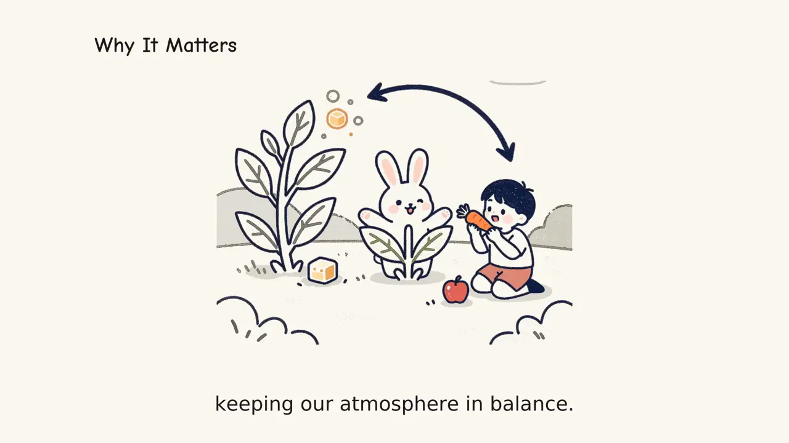

From Lesson Notes or Article Text to a Narrated Explainer Video With Subtitles

Teachers, newsletter writers and documentation teams sit on mountains of clear written explanations—lesson plans, study guides, blog posts and FAQ pages—that students and readers would rather watch as a two-minute video. Recording those lessons yourself means setting up a microphone, fighting room echo, drawing diagrams on a tablet, and editing out every stumble. Converting the text directly into a narrated whiteboard video skips the studio entirely while keeping the pedagogical structure intact.
Why hand-drawn scenes hold attention in lessons
Cognitive load research has pointed to the same classroom truth for decades: learners absorb a complex process faster when a diagram builds step by step alongside a calm voice than when a dense slide appears all at once. A warm whiteboard vignette guides the eye to the exact part of the system being explained—whether that is light reactions in photosynthesis, how compound interest grows, or how a bill becomes law—without the visual clutter of stock video montages.
When you turn text into a narrated explainer video, the goal is not to read every paragraph verbatim on screen. Instead, the pipeline extracts the core hook-to-takeaway arc, assigns one coherent hand-drawn scene to each step, and writes narration that sounds natural when spoken aloud.
Preparing your notes or article before you generate
SpeedPainter's Explainer Video accepts plain text up to 20,000 characters—roughly a 3,000-word article or a full lecture handout—and works in the source language or any requested output language, including English, Chinese, Spanish, Japanese and German. You will get the sharpest storyboard if you spend two minutes tidying the input:
- State the target audience and takeaway in the first sentence. A note like "Explain how TCP three-way handshakes work for first-year computer science students in 90 seconds" sets both tone and depth immediately.
- Keep concrete examples and numbers. Dates, formulas, before-and-after comparisons and named stages give the illustrator specific objects to draw rather than generic icons.
- Remove boilerplate navigation and footnotes. If you are pasting from a web page or PDF, strip out cookie banners, author bios and bibliography lists so the time budget goes to the actual lesson.
- Pick a realistic target duration. You can request anywhere from 5 to 300 seconds, with 60 seconds as the default. If the spoken script needs slightly more time to finish a sentence clearly, the engine safely extends the video rather than clipping the narrator's voice.
Subtitles, pacing and classroom reuse
For education explainer videos, accessibility is just as important as the artwork. By default, every render burns word-timed subtitles directly into the video frame and also publishes a separate SRT subtitle file. That gives you two ways to deploy the same asset: play the burned-caption MP4 directly on classroom projectors and mobile feeds where students watch on mute, or upload the SRT track to a learning management system for searchable captions and study transcripts.
Remember that the default workflow treats each revision—such as switching from 16:9 widescreen to 9:16 vertical, turning subtitles off, or tightening a 120-second overview down to 60 seconds—as a fresh complete render. Review the confirmation card's duration, aspect ratio and credit count before starting, and keep your favorite prompt notes handy so you can spin up matching videos across an entire semester syllabus. When a topic spans several chapters, breaking a long lecture into three focused 90-second explainers—each covering one definition, one worked example, and one summary table—keeps retention high and lets students rewatch the exact concept they missed before an exam.
Recommended settings by teaching format
| Format | Target duration | Aspect ratio | Subtitles |
|---|---|---|---|
| Single concept definition or vocabulary card | 30–45 s | 9:16 or 1:1 | Burned in |
| Standard classroom topic or article summary | 60–120 s | 16:9 | Burned in + SRT |
| Full unit walkthrough or exam review | 180–300 s | 16:9 | Burned in + SRT |